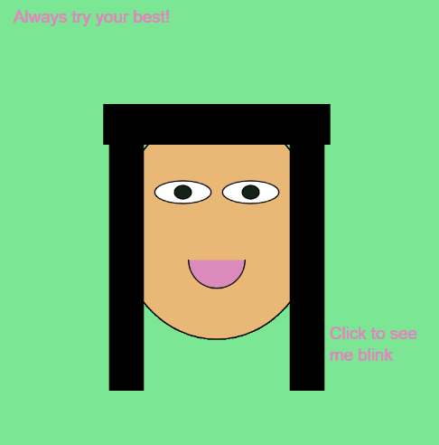

Profile
Hello! My name is Keerthana and I am a high school student with a strong passion for Computer Science,
Biology, and Business. I look forward to combining my passions by going into the field of Computational
Biology and creating my own business to support larger causes.
In my free time, I am also an avid Bharatanatyam dancer and Taekwondo martial artist. I also enjoy reading and
spending time with my family and friends. Currently, I am reading Emma by Jane Austen.
Featured Projects
View a few of my selected projects below!
My Personal Avatar
I used P5 JS. to create my personal avatar. To make it more interactive, I have also programmed it to be able to blink when you click.
View project / case studyCollection Game To Promote Healthy Eating

I used P5 JS. to program a Collection game where the player must collect healthy items to gain points.
View project / case studyWork Experience
Taekwondo Instructor
Taekwondo Dojo
June 2020
Assist head instructor in managing and teaching students of various ages and levels in Taekwondo. Engage in Instructor meetings and help run testings for 80+ kids.
Events I have helped with:
- Assisted at National Tournaments
- Assisted at Regional Tournaments
Education
High School
Graduation Date: Spring 2026
I am in many clubs at my school.
Wake Tech Community College
Programs: Certification in Web Development, Certification in Entreprenurship, Associate in Arts
I have learned many new things and have developed a good work ethic by balancing both Wake Tech courses as well as High School.